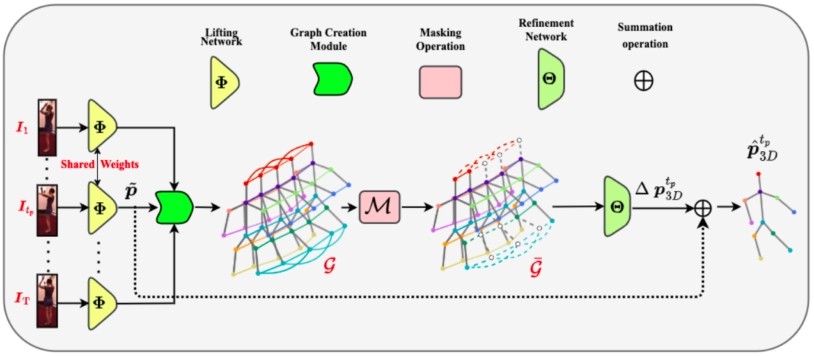

|
Ilia Badanin I am currently pursuing my Master’s in Data Science at École Polytechnique Fédérale de Lausanne (EPFL), where I continue to expand my expertise in machine learning. My academic journey began with a Bachelor of Science from the Bauman Moscow State Technical University (BMSTU), where I developed a strong foundation in these fields. During my undergraduate studies, I had the opportunity to spend an exchange semester at EPFL, where I completed my Bachelor's thesis under the guidance of Prof. Martin Jaggi. My thesis focused on multiplication-free neural networks, exploring cutting-edge approaches for computational efficiency. Additionally, I contributed to research at CVLab, improving human pose estimation methods and gaining practical experience in advanced computer vision techniques. More recently, I have worked on multilingual large language model interpretability under the mentorship of Chris Wendler, deepening my understanding of natural language processing and interpretability challenges. I also collaborated with the Swiss AI Initiative, working with Imanol Schlag on the Swiss LLM. These experiences have further honed my skills and solidified my passion for cutting-edge research in AI. |

|
News |
|
| March 2025 - Present | Working at ETH AI Center on Swiss AI Initiative on a Swiss LLM. |
| May 2025 | Submitted a paper at EMNLP as first author. |
| Aug 2024 - Jan 2025 | Working on multilingual interpretability at dlab |
| Nov - Dec 2024 | Working in the Swiss AI Initiative, released chat platform |
| Sep 2024 | Started my MSc in Data Science at EPFL |
| Jun 2024 | Completed the final project for the Stanford CS224N course |
| Apr 2024 | Teaching at Stanford Code in Place |
| Mar 2024 | Presented our findings at 3DV Conference |
| Oct 2023 | Our work is accepted at 3DV Conference |
| Jul 2023 | Graduated from BMSTU |
ResearchI have a background in computer vision and optimization. I am deeply interested in diffusion models. During my PhD, I plan to further explore this innovative AI technology. I'm motivated by its potential to transform how generative models are applied in real-world scenarios. |
|

|
Occlusion Resilient 3D Human Pose Estimation
Soumava Kumar Roy, Ilia Badanin, Sina Honari, Pascal Fua International Conference on 3D Vision, 2024 arXiv We employ Graph Convolutional Networks to improve human pose estimation from the video sequence. |
|
Design and source code from Jon Barron |